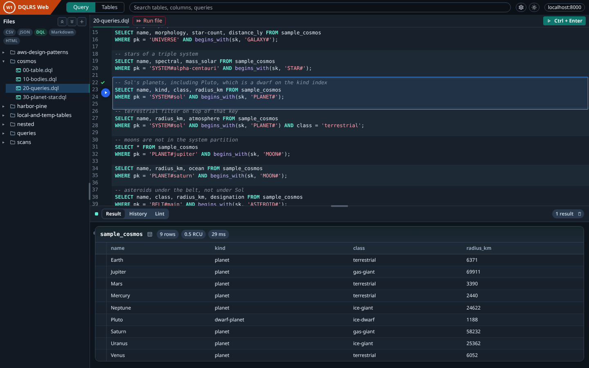
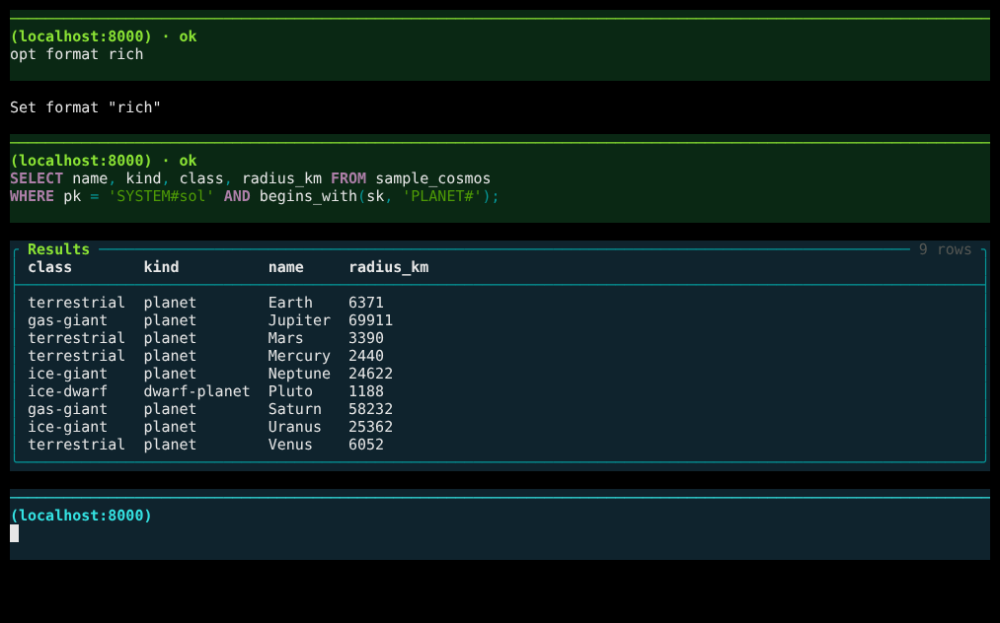
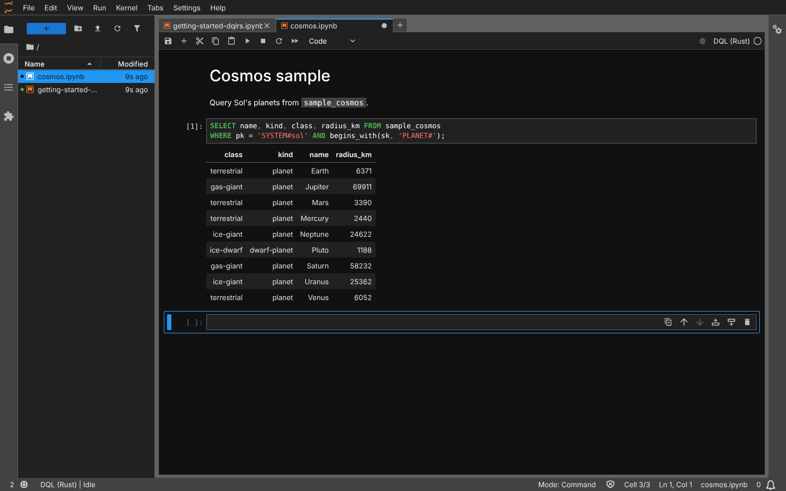

SELECT, SCAN, INSERT, UPDATE, EXPLAIN, and more, from a terminal, a browser, or a notebook. Your AI agent gets the same workspace over MCP.



Agents search tables, lint, and write .dql files. They never run queries.
AES-256-GCM on disk. The key lives in your OS keychain.
Loopback servers. A per-user token guards the API and MCP.
Index-aware plans, lint, SAVE/LOAD to JSON, CSV, and MessagePack.